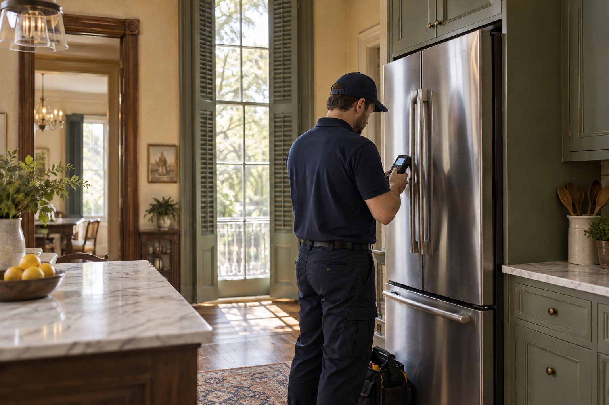
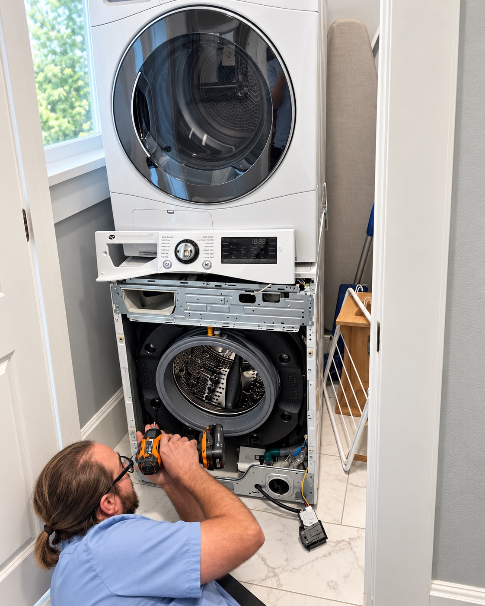
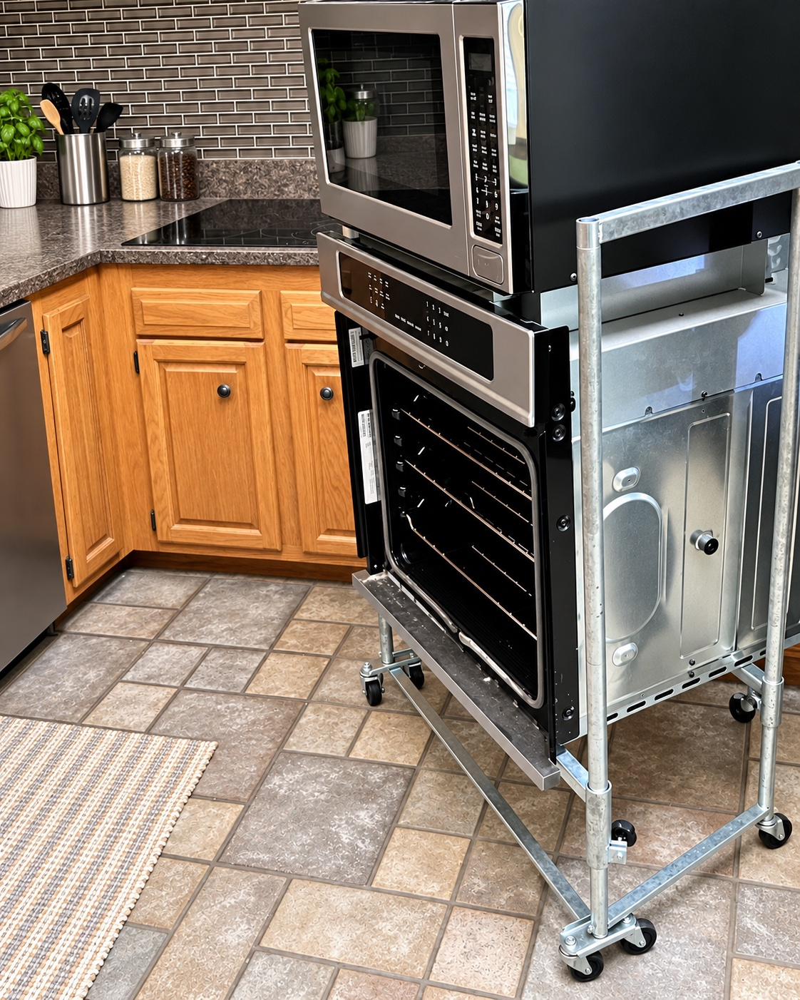
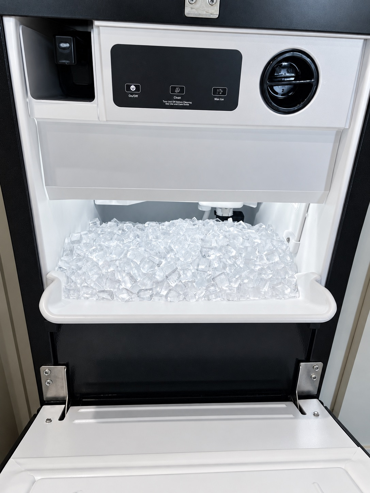

Tell us what changed
Share the appliance, brand, model if available, ZIP code and symptoms.
Residential appliance service · Greater New Orleans
Careful diagnosis, plain-language options, and service for most major and harder-to-find appliance brands.
Open Monday–Friday · 8:00 AM–4:30 PM

Appliance repair services
Choose the appliance to see common concerns, what helps before a visit, and the next step.

Cooling, leaks, ice makers and unusual sounds
↗
Drainage, spin, fill and leak concerns
↗
Heat, airflow, noise and tumbling concerns
↗
Drainage, cleaning, leaks and control concerns
↗
Heating, ignition, controls and temperature concerns
↗
Production, drainage, leaks and quality concerns
↗Straightforward pricing
The diagnostic service-call fee starts at $129 plus sales tax. Some ZIP codes require an additional travel fee. The office confirms the applicable fee before booking.
See fees and warranty details ↗What to expect
Share the appliance, brand, model if available, ZIP code and symptoms.
The office verifies service coverage, timing and any ZIP-based travel fee.
The technician evaluates the appliance and explains the recommended next step.
Service-area check
Enter a five-digit ZIP code. The office makes the final scheduling and travel-fee confirmation.
70001 · 70002 · 70003 · 70004 · 70005 · 70006 · 70032 · 70043 · 70053 · 70054 · 70055 · 70056 · 70057 · 70058 · 70062 · 70065 · 70072 · 70114 · 70115 · 70116 · 70117 · 70118 · 70119 · 70122 · 70123 · 70124 · 70131
View the complete service-area page ↗Broader brand knowledge
Service for most appliance brands, including ILVE, Forno, EuroChef, Verona, THOR, NXR and more. Model coverage is confirmed before booking.
Useful answers
Fees, parts, access and coverage should be discussed before the appointment—not discovered later.
Read all FAQs ↗It covers the service visit and diagnosis. The fee starts at $129 plus sales tax; some ZIP codes have an additional travel fee confirmed by the office.
The diagnostic fee and labor have 30-day coverage for the same appliance and same issue. Parts coverage is set by the manufacturer and typically ranges from 90 days to one year.
The appliance brand, model number if available, ZIP code, symptoms and any displayed error code.
Ready for the next step?